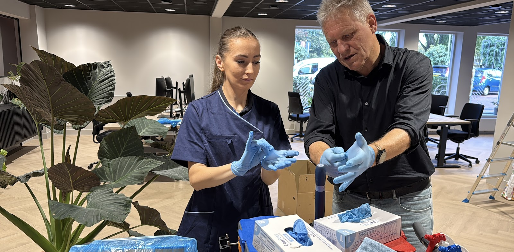
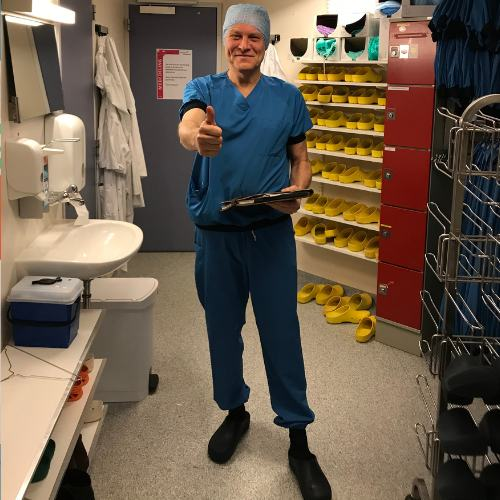

Schoonmaakopleidingen uit Nijmegen
Schoonmaken is een ambacht.
Wij leiden schoonmakers op waar het werk gebeurt: op jouw werkvloer, met jouw middelen. Want als je begrijpt waarom, verandert hoe.
5,0 op Google

Een schoonmaker die snapt waarom, werkt anders.
Bewuster, veiliger en met meer trots. Dat is de stap van onbewust uitvoeren naar bewust bekwaam. Voor je team betekent dat:
-
Medewerkers die begrijpen waarom ze doen wat ze doen
-
Kwaliteit die voorspelbaar is, niet afhankelijk van de persoon
-
Minder herwerk en minder bijsturen voor leidinggevenden
-
Veilig en gezond werken als vanzelfsprekend onderdeel van het vak
Drie routes, één vak.
Van de eerste werkdag tot de leidinggevende die inhoudelijk wil sturen. Elke route stemmen we af op jouw organisatie, jouw mensen en hun taalniveau.
-
1
Basis
Voor startende en uitvoerende medewerkers die een stevig fundament nodig hebben: veilig werken, de juiste schoonmaaktechniek, de juiste middelen en materialen, en een professionele werkhouding.
-
2
Verdiepend
Voor ervaren medewerkers die willen doorgroeien in specialistische omgevingen of op een kritischer kwaliteitsniveau. Denk aan sectortrainingen, risicovolle vervuiling en vloerentrainingen.
-
3
Leidinggevenden
Voor leidinggevenden en (aankomend) managers die vakinhoudelijk willen aansturen. Met begrip van schoonmaaktechniek, materialen en processen, en grip op kwaliteit, resultaat en klantbehoud.
Maatwerk en in-company
Geen organisatie is hetzelfde en geen schoonmaker is hetzelfde. Daarom trainen we in je eigen werkomgeving, met je eigen middelen en routines. Praktijk op locatie betekent maximale herkenning en resultaat.
Vraag een opleidingsplan op maat aanVast in iedere opleiding
- Veilig werken
- Vitaal vakmanschap
- Correct gebruik van materialen en middelen
- Uitvoering van schoonmaaktechnieken
We doen het nét even anders.
Een opleidingsfabriek
Grote aantallen, vaste formats, wisselende trainers. Snel geregeld. Voor die keuze zijn er anderen.
Schoonmaakopleiding Nederland
Trainers die het vak van binnenuit kennen. Een opleiding die aansluit op jouw mensen en jouw praktijk. Theorie is er om het waarom van de praktijk te ondersteunen.
Altijd de waarom
Waarom doe je dit zo? Wat gebeurt er als je het anders doet? Wat is het resultaat? Die vragen komen de hele dag terug. Met humor en ontspanning, wel bloedserieus over het vak.
Kwaliteit die ergens op slaat
We beginnen bij de klant. Wat verwacht die, wat ziet die? Kwaliteit is geen abstracte norm, het is iets wat iemand ervaart.
Het examen is een bijproduct
Veel opleiders trainen je voor het examen. Wij trainen je voor het vak. Het examen komt daarna vanzelf.
Jouw achtergrond is het startpunt
Wie ben je, waar kom je vandaan, wat ken je al? Daar bouwen we op. Herkenbare voorbeelden landen beter dan voorbeelden uit een boek.
Je mag er zijn, en uitgedaagd worden
We halen naar boven wat er al in zit. Niet door te zeggen dat het goed is, maar door te laten zien dat je meer kunt dan je denkt.
Geen vast programma, wel een eindpunt
Waar we naartoe gaan staat vast. Hoe we daar komen, hangt af van de groep. Er zijn altijd meerdere wegen.

Beide voeten in de schoonmaakklei.
Jaap Niezen leidt schoonmakers op sinds 1994. Op de werkvloer, naast de mensen die het werk doen. Met een achtergrond als technisch adviseur, salesmanager en bedrijfsleider weet hij wat er speelt in de branche. Hij werkt samen met een netwerk van bevlogen trainers en specialisten: praktijkmensen met dezelfde nuchterheid en dezelfde passie voor het vak.
Je hebt één aanspreekpunt dat alles regelt, van offerte tot uitvoering van de opleiding.
"Of je nu ervaren schoonmakers hebt of frisse beginners… wij zorgen dat elke deelnemer groeit in vakmanschap én plezier."
"Ik vond het super interessant en heb mega veel waardevolle kennis opgedaan. Zeker een aanrader!"
Geen poespas. Gewoon goed schoon.
Naast opleidingen geven we advies, onder de naam Schoonmaakadvies Nederland. Volledig onafhankelijk van leveranciers. We kijken mee, zeggen wat we zien en helpen je direct verder.
Analyse en verbetering
Grip op kwaliteit en processen.
- Schoonmaakanalyse
- We kijken mee en zeggen wat we zien. Concreet inzicht dat direct bruikbaar is.
- Advies vloeronderhoud
- Welke ondergrond, welk middel, welk onderhoud. Vloeren die er altijd op hun best uitzien.
- Advies middelen en materialen
- Vrij van commerciële belangen. We adviseren wat werkt in jouw praktijk.
- Begeleiding op de werkvloer
- Naast de mensen die het werk doen. Direct, praktisch en toepasbaar.
Organiseren en uitbesteden
Slimmer schoonmaak organiseren, van bestek tot uitvoering.
- Ondersteuning eigen schoonmaakdienst
- Advies en praktische begeleiding voor organisaties die zelf schoonmaken, of willen overstappen van extern naar intern. Van begin tot eind.
- Interim en procesondersteuning
- Tijdelijk iemand nodig die de boel structureert en doorpakt? We stappen in en zorgen dat het loopt.
- Aanbestedingen
- Hulp bij aanbestedingen, met kennis van de branche van binnen en van buiten.
Opdrachten uitgevoerd bij onder andere
In zorg, onderwijs, hospitality, industrie en (semi-)overheid. Overal waar schoonmaakkwaliteit direct invloed heeft op welzijn, gezondheid en uitstraling.
Van der Valk Hotels De Efteling Shell Landal Greenparks Land van Bartje Penitentiaire Inrichtingen Martini Ziekenhuis UMCG NS NAM CSU LSG Grozette Royal Polak Spices Werelderfgoed Kinderdijk Ausnutria Blue Facilitair Accurate Zorg Morselt
Twintig minuten. Een eerlijk gesprek.
Elke organisatie is anders, daarom beginnen we met luisteren. Vertel waar jullie tegenaan lopen, dan kijken we samen wat nodig is. Geen verplichtingen.
Bel 026 669 0611- Adres
- Nieuwe Dukenburgseweg 9
6534 AD Nijmegen
Bezoek graag op afspraak - Bereikbaar
- Maandag t/m vrijdag
tot 17:00 uur